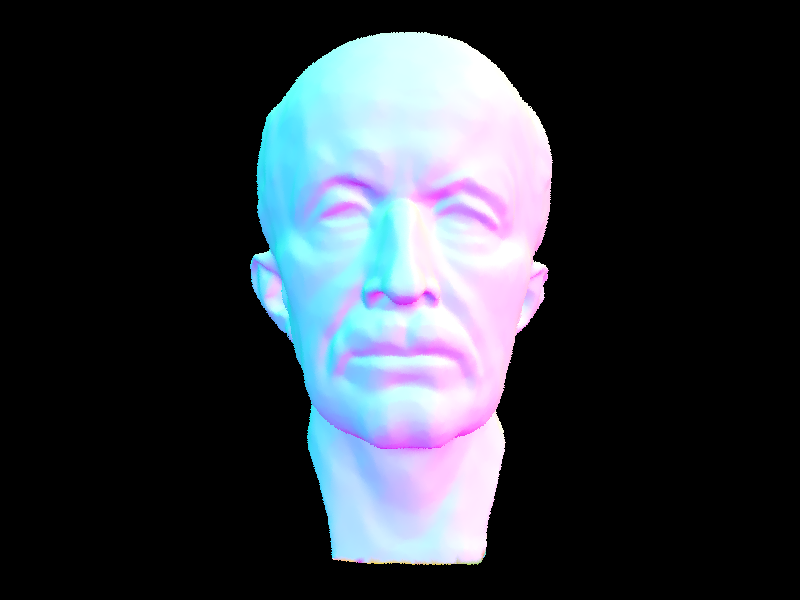
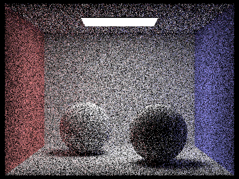

It all starts at the image pixels itself. To create the image, we must, in layman’s terms, take a picture. More specifically, starting at image coordinates (i,j) ∈ [0,1], we cast a ray toward the direction of the camera. This is illustrated by the below figure:
We do this by first converting from image space to camera space, by doing:
We then convert our camera space coordinates to world space coordinates by using the intrinsic c2w matrix. We now have ray shooting from the camera into our scene to start creating our image.
To generate rays for a given pixel (x,y),x ∈ [0,w],y ∈ [0,h], we use a two dimensional uniform U = [U1,U2],Ui ~ [0,1]. We then add it to our pixel coordinates s = (x,y) + U, and generate the ray from that position. From there, we can use that ray to sample our scene intersection and illuminance.
One use of the ray is to check if it intersects with any primitives in the scene. If it
does, then that primitive should be included as contributing to the color of the pixel.
In this project, we have two different types of primitives: a triangle and a sphere.
Triangle Intersection To check if a ray intersects with a triangle, we first define
the triangle as 3 vertices V 1,V 2,V 3, the ray r = wo + twd. Furthermore, recall that
we can decompose a point inside a triangle in barycentric coordinates, i.e
p = αV 1 + βV 2 + γV 3. We would like to solve for a t to find the intersection between
the ray and the triangle. In other words, we solve:
Since (α,β,γ) form a convex combination, then we can reduce the 3 variables into 2 variables b1,b2. Thus, we do:
This ends up being the linear equation:
which we can solve for using matrix inverses.
Sphere Intersection: Recall again that r = wo + twd. We can define a sphere as
p : (p - c)2 - R2 = 0. To solve for the intersection of the sphere, we plug in our ray
point for p, so the equation we solve is:
This is simply a quadratic equation that we can solve using the quadratic formula, where:
Below are some examples that we can render with just the intersection of primitives:


To bound volumes in a hiearchy, we use a data structure called a BVH binary tree. This allows us to traverse the scene in a much more efficient way rather than iterating through every primitive.
We build the BVH tree recursively. Let construct_bvh(node, start, end) represent the function to construct the BVH tree, where node, start, end is the input node, start of the primitives list, and end of the primitives list. Below is the algorithm:
Add all primitives between start and end to the bounding box of the node.
If the number of primitives in this node is smaller than the max leaf size, return the node as a leaf.
Choose the best axis (out of x,y,z) to split on. In this case, my heuristic was to choose the axis with the longest length.
Partition the primitives into left and right sections. To split, I used the average of the centroids.
Using the split element from the partition denoted mid, recurse. Set the left and right element of the current node to the return value of the recursive call.
return the node
Below are a few renders using the BVH tree:

Below are a few statistics to detail how much faster rendering a mesh is with and
without using a BVH tree:
| BVH Tree Comparisons on cow.dae
| |||
| Average # Of Rays per Second | Average # Of Intersections per Ray | Clock Time |
With BVH Tree | 4.9409 Million | 2.300919 | 0.0897s |
Without BVH Tree | 0.0337 Million | 401.648053 | 14.0073s |
| BVH Tree Comparisons on beast.dae
| |||
| Average # Of Rays per Second | Average # Of Intersections per Ray | Clock Time |
With BVH Tree | 4.1165 Million | 1.672902 | 0.1099s |
Without BVH Tree | 0.0015 Million | 8532.693668 | 309.9687s |
| BVH Tree Comparisons on peter.dae
| |||
| Average # Of Rays per Second | Average # Of Intersections per Ray | Clock Time |
With BVH Tree | 3.3927 Million | 3.061643 | 0.1326s |
Without BVH Tree | 0.0031 Million | 4040.849866 | 150.6201s |
There are two different methods for implementing direct lighting: Uniform
Hemisphere Sampling and Importance Sampling.
The first utilizes Uniform Hemisphere Sampling. In this regime, we assume that
the light creates a hemisphere in its illuminance, and we sample a random direction
in that hemisphere. Once we sample it, we create a ray going from the intersection of
the origin toward the direction of the light. If the ray intersects the light
(or the converse, the light direction itersects the hit point), then we can
say that sampled light direction illuminates that intersection point, or that
primitive. We can then use the monte carlo integral estimate for the reflectance
equation:
Where Li is the emission fro the light source, f is the bidirection sampling
function, and θi is the angle between intersection normal of the primitive and our
light direction.
The second utilizes Importance Sampling. In this regime, we realize that uniform
sampling will create many redundant rays that will miss the intersection of the
primitive. Instead, we mainly only sample an area of light that has high probability
to hit the intersection. Again, we shoot a ray starting from the intersection point,
check if there are any primitives in the ray, and again do the reflectance
equation. Furthermore, we no longer have to check if we intersect with the light.
When we sample from the ray, for sufficient t , we know we’ll intersect with
the light. We just need to check if we intersect with any other primitive.
One other heuristic one should note here is the angle between the normal and the
light direction. If the light direction has a component that is going toward the
same direction of the normal, then the light won’t illuminate the pixel. In
other words, we check if the angle between -wi and N is greater than 0.
We can see in Hemisphere sampling, the sampling is much more inefficient as we are probably making missing a lot of samples. However for importance sampling, we know our direction is correct, and is just a matter of seeing whether there’s a primitive in the ray or not. Thus, with importance sampling, we are much more efficient with our samples, and get much better images.
To implement indirect lighting, we have to consider the possible bounces of a ray that could hit the primitive we consider. Let p = wo + twd be the point that intersects the primitive. Furthermore, let N be the normal vector on the intersection. We first get the emission of light on that point from direct lighting; this was from task 3. We get indirect lighting by sampling a random direction, then shooting a ray from that direction. If there is an intersection from the hit point p and the sampled direction, we get the emission from that primitive’s direct lighting and indirect lighting. This is where the recursive nature of the algorithm comes from. If we do this N times, we get our N bounce algorithm. More mathematically, our recursive relationship is:

However, this recursion can go on infinitely. To prevent this, we can use a continuation probability that allows us to get the expected value of a pixel. I.e, we continue with probability q, and our new recursion is:
Figure 5 and Figure 6 are a few examples.
We can also see the affect of direct lighting vs indirect lighting with the dragon in Figure 7. With direct lighting, we can see more of the low frequency features, but with indirect lighting, we get much more high frequency features from the light.
Below are renderings of the bunny with indirect lighting and different number of ray bounces.
For figures 8, 9, 10, 11, 12, 13, in the second bounce, we can see that the indirect
lighting provides more detailed lighting around the bunny,better shadows for the
bunny, and actual lighting for the ceiling. In the third bounce, we can see some better
lighting on the edges of the room, and better shadows for the bunny. Furthermore, if
we look at the accumulated bounces, we can see after each bounce, light can spread
much more freely, with the room and shadows becoming more illuminated.
For Figures the bunny figures with no comparison, we use russian-roullete
which uses the expected value of the bounces rather than looping to a set
N-value:

Further below are renders of the sphere with 1, 2, 4, 8, 16, 64, and 1024 samples respectively. We can see that as we increase the samples, we can see it gets much less grainy.

Adaptive Sampling prevents us from making redundant ray samples when we’ve converged on a value for a pixel. More specifically, if we’re just sampling background, and we’re doing 1024 ray samples per pixel, but we’ve converged in 64 ray samples, then we can just return that ray sample. We do this by checking every set interval of samples:
where
and μ and σ are defined to be the mean and standard deviation respectfully. To keep track of these statistics, we can measure the statistics of the illuminance of each sampled ray, and store variables s1 and s2 such that:
We can then get the μ and σ by doing:
We then make this check every batch interval, since this check can be costly. Below are examples of adaptive sampling with the bunny and the sphere: